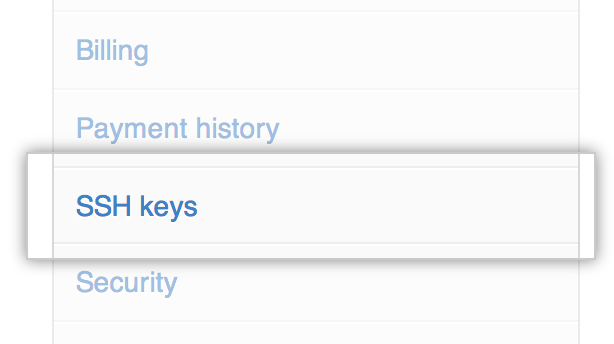

A "Permission denied" error means that the server rejected your connection. There could be several reasons why, and the most common examples are explained below.
Should the sudo command be used with Git?
You should not be using the sudo command with Git. If you have a very good reason you must use sudo, then ensure you are using it with every command (it's probably just better to use su to get a shell as root at that point). If you generate SSH keys without sudo and then try to use a command like sudo git push, you won't be using the same keys that you generated.
Check that you are connecting to the correct server
Typing is hard, we all know it. Pay attention to what you type; you won't be able to connect to "githib.com" or "guthub.com". In some cases, a corporate network may cause issues resolving the DNS record as well.
To make sure you are connecting to the right domain, you can enter the following command:
ssh -vT git@github.com # OpenSSH_5.6p1, OpenSSL 0.9.8r 8 Feb 2011 # debug1: Reading configuration data /Users/you/.ssh/config # debug1: Reading configuration data /etc/ssh_config # debug1: Applying options for * # debug1: Connecting to github.com [192.30.252.131] port 22.
Note the IP address (the numbers within the [ ] brackets). The connection should be made to a GitHub IP address, on port 22, unless you're overriding settings to use SSH over HTTPS.
Always use the "git" user
All connections must be made as the "git" user. If you try to connect to "yourname@github.com", it will fail:
ssh -T billy.anyteen@github.com # Permission denied (publickey).
Instead, you should verify your connection by typing:
ssh -T git@github.com # Hi username! You've successfully authenticated...
Make sure you have a key that is being used
To verify that you have a private key generated and loaded into SSH, type ssh-add -l:
# start the ssh-agent in the background eval "$(ssh-agent -s)" # Agent pid 59566 ssh-add -l # 2048 a0:dd:42:3c:5a:9d:e4:2a:21:52:4e:78:07:6e:c8:4d /Users/you/.ssh/id_rsa (RSA)
# start the ssh-agent in the background ssh-agent -s # Agent pid 59566 ssh-add -l # 2048 a0:dd:42:3c:5a:9d:e4:2a:21:52:4e:78:07:6e:c8:4d /Users/you/.ssh/id_rsa (RSA)
# start the ssh-agent in the background eval "$(ssh-agent -s)" # Agent pid 59566 ssh-add -l # 2048 a0:dd:42:3c:5a:9d:e4:2a:21:52:4e:78:07:6e:c8:4d /Users/you/.ssh/id_rsa (RSA)
# start the ssh-agent in the background eval "$(ssh-agent -s)" # Agent pid 59566 ssh-add -l # 2048 a0:dd:42:3c:5a:9d:e4:2a:21:52:4e:78:07:6e:c8:4d /Users/you/.ssh/id_rsa (RSA)
If that command does not print anything, you will need to load an existing SSH key—or a new SSH key that you have generated—by running ssh-add path/to/key.
Tip: On most systems the default private keys (~/.ssh/id_rsa, ~/.ssh/id_dsa and ~/.ssh/identity) are automatically added to the SSH authentication agent. You shouldn't need to run ssh-add path/to/key unless you override the file name when you generate a key.
Getting more details
You can also check that the key is being used by trying to connect to git@github.com:
ssh -vT git@github.com # ... # debug1: identity file /Users/you/.ssh/id_rsa type -1 # debug1: identity file /Users/you/.ssh/id_rsa-cert type -1 # debug1: identity file /Users/you/.ssh/id_dsa type -1 # debug1: identity file /Users/you/.ssh/id_dsa-cert type -1 # ... # debug1: Authentications that can continue: publickey # debug1: Next authentication method: publickey # debug1: Trying private key: /Users/you/.ssh/id_rsa # debug1: Trying private key: /Users/you/.ssh/id_dsa # debug1: No more authentication methods to try. # Permission denied (publickey).
In that example, we did not have any keys for SSH to use. The "-1" at the end of the "identity file" lines means SSH couldn't find a file to use. Later on, the "Trying private key" lines also indicate that no file was found. If a file existed, those lines would be "1" and "Offering public key", respectively:
ssh -vT git@github.com # ... # debug1: identity file /Users/you/.ssh/id_rsa type 1 # ... # debug1: Authentications that can continue: publickey # debug1: Next authentication method: publickey # debug1: Offering RSA public key: /Users/you/.ssh/id_rsa
Verify the public key is attached to your GitHub account
You must provide your public key to GitHub to establish a secure connection.
- Open Terminal.
-
Start SSH agent in the background.
eval "$(ssh-agent -s)" # Agent pid 59566
-
Enter
ssh-add -land take note of the resulting fingerprint:ssh-add -l # 2048 a0:dd:42:3c:5a:9d:e4:2a:21:52:4e:78:07:6e:c8:4d /Users/USERNAME/.ssh/id_rsa (RSA)
In the user settings sidebar, click SSH keys. 
Compare the list of SSH keys with the output from
ssh-add -l.
- Open the command line.
-
Start SSH agent in the background.
ssh-agent -s # Agent pid 59566
-
Enter
ssh-add -land take note of the resulting fingerprint:ssh-add -l # 2048 a0:dd:42:3c:5a:9d:e4:2a:21:52:4e:78:07:6e:c8:4d /Users/USERNAME/.ssh/id_rsa (RSA)
In the user settings sidebar, click SSH keys.
Compare the list of SSH keys with the output from
ssh-add -l.
- Open Terminal.
-
Start SSH agent in the background.
eval "$(ssh-agent -s)" # Agent pid 59566
-
Enter
ssh-add -land take note of the resulting fingerprint:ssh-add -l # 2048 a0:dd:42:3c:5a:9d:e4:2a:21:52:4e:78:07:6e:c8:4d /Users/USERNAME/.ssh/id_rsa (RSA)
In the user settings sidebar, click SSH keys.
Compare the list of SSH keys with the output from
ssh-add -l.
- Open Terminal.
-
Start SSH agent in the background.
eval "$(ssh-agent -s)" # Agent pid 59566
-
Enter
ssh-add -land take note of the resulting fingerprint:ssh-add -l # 2048 a0:dd:42:3c:5a:9d:e4:2a:21:52:4e:78:07:6e:c8:4d /Users/USERNAME/.ssh/id_rsa (RSA)
In the user settings sidebar, click SSH keys.
Compare the list of SSH keys with the output from
ssh-add -l.
If you don't see your public key in GitHub, you'll need to add your SSH key to GitHub to associate it with your computer.
If you see an SSH key you're not familiar with on GitHub.com or GitHub Enterprise, delete it immediately and contact GitHub support or your site administrator, respectively, for further help. An unidentified public key may indicate a possible security concern. For more information, see "Keeping your SSH keys safe."